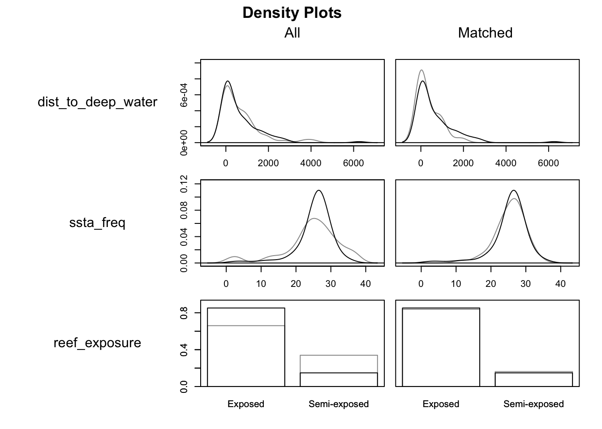
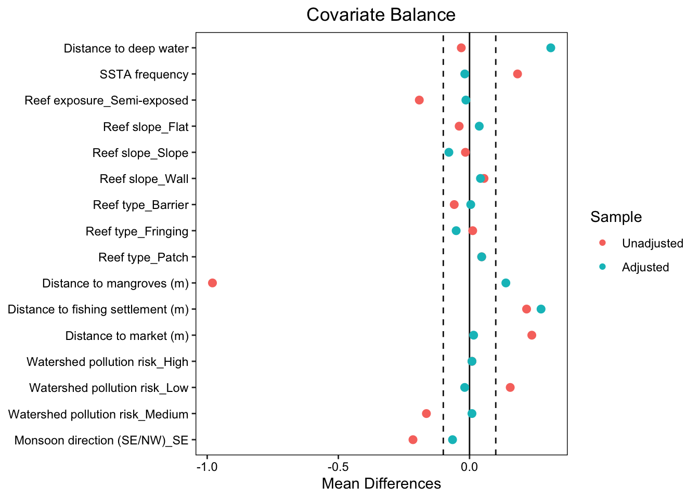

library(tidyverse) # data wrangling + plotting
library(here) # portable file paths (project-root relative)
library(janitor) # clean variable names
library(gtsummary) # clean summary tables
library(gt) # optional: render gtsummary nicely
library(MatchIt) # matching estimation
library(cobalt) # balance checks + love plots
library(jtools) # clean regression output summariesLab Week 4: Statistical Matching + Fixed Effects
A replication of study analysis in Ahmadia (2015)
Lab Outline
- Load in the packages and data
- Take a look at focal variables
- Checking covariate imbalance (pre‑matching).
- Conduct a matching analysis (Mahalanobis matching)
- Evaluate balance after matching
- Estimate regression models for each outcome using the matched sample
- Practice fixed effects estimation
Applied study & data source
This lab uses open-access replication data from:
Ahmadia, G. N., Glew, L., Provost, M., Gill, D., Hidayat, N. I., Mangubhai, S., Purwanto, P., Fox, H. E. (2015). Integrating impact evaluation in the design and implementation of monitoring marine protected areas. Philosophical Transactions of the Royal Society B.
Big idea: MPAs are not randomly placed. They may be placed in “better” locations which means that treated and control groups are unlikely to make an apples-to-apples comparison. AKA, we are up against the nearly universal causal inference problem with non-experimental data, treatment assignment selection bias.
Ahmadia et al. (2015) uses statistical matching to construct a more apples-to-apples comparison group. In this lab exercise we will approximately replicate the main matching analysis conducted in this study.
Note
NOTE: When matching, the authors imposed additional restrictions (caliper-style constraints) on some habitat variables. We do not fully replicate those constraints here.
Reading reference:
MatchIt Vignette: https://kosukeimai.github.io/MatchIt/articles/MatchIt.html
0. Load packages + study data
Read in the cleaned survey data
data_clean <- read_csv(here("week4", "Ahmadia_2015_DataClean.csv"), show_col_types = FALSE)1. Create variable description table for key variables in the matching analysis
| Variable Descriptions (Treatment, Outcomes, Matching Covariates) - Ahmadia (2015) | |
| Label | Description |
|---|---|
| treated_mpa (Treatment) | Site is inside a Marine Protected Area (1 = inside MPA , 0 = outside MPA). |
| biomass_fisheries (Outcome) | Biomass of key fisheries families (Serranidae, Lutjanidae, Haemulidae) measured in kg per hectare (kg/ha). |
| biomass_ecological (Outcome) | Biomass of herbivorous fish families (Acanthuridae, Scaridae, Siganidae) measured in kg per hectare (kg/ha). |
| dist_deep_water (Covariate) | Covariate: Distance to deep water (50 m depth contour), in meters (m). |
| ssta_freq (Covariate) | Frequency of sea-surface temperature anomalies (SSTA) |
| reef_exposure (Covariate) | Reef wave exposure (Exposed, Semi-exposed, Sheltered). |
| reef_slope (Covariate) | Reef slope (Flat, Slope, Wall) |
| reef_type (Covariate) | Reef type (Patch, Fringing, Barrier, Atoll). |
| dist_mangroves (Covariate) | Distance to nearest mangrove habitat, in meters (m). |
| dist_fishing_settlement (Covariate) | Distance to nearest fishing settlement, in meters (m). |
| dist_market (Covariate) | Distance to primary market, in meters (m). |
| pollution_risk (Covariate) | Watershed pollution risk. (1 = Low; 2 = Medium; 3 = High). |
| monsoon_direction (Covariate) | Monsoon wind exposure direction. (Northwest (NW), Southeast (SE)). |
2. Check imbalance before matching (covariate balance table)
Goal: Compare covariate distributions between treated_mpa and control sites before matching.
data_clean %>%
select(
treated_mpa, dist_to_deep_water, ssta_freq, reef_exposure,
reef_slope, reef_type,
dist_mangroves, dist_fish_settl, dist_market,
pollution_risk, monsoon_direction) %>%
tbl_summary(
by = treated_mpa,
statistic = list(
all_continuous() ~ "{mean} ({sd})",
all_categorical() ~ "{n} ({p}%)"
)
) %>%
modify_header(label ~ "**Covariate**") %>%
modify_spanning_header(c("stat_1", "stat_2") ~ "**Group**")| Covariate |
Group
|
|
|---|---|---|
| Control (non‑MPA) N = 531 |
MPA site N = 1081 |
|
| dist_to_deep_water | 656 (905) | 627 (913) |
| ssta_freq | 25 (8) | 25 (5) |
| reef_exposure | ||
| Exposed | 35 (66%) | 92 (85%) |
| Semi-exposed | 18 (34%) | 16 (15%) |
| reef_slope | ||
| Flat | 7 (13%) | 10 (9.3%) |
| Slope | 45 (85%) | 90 (83%) |
| Wall | 1 (1.9%) | 8 (7.4%) |
| reef_type | ||
| Barrier | 8 (15%) | 10 (9.3%) |
| Fringing | 45 (85%) | 93 (86%) |
| Patch | 0 (0%) | 5 (4.6%) |
| dist_mangroves | 9,679 (14,229) | 4,618 (5,165) |
| dist_fish_settl | 25,646 (28,199) | 32,505 (31,537) |
| dist_market | 124,152 (49,763) | 139,918 (66,406) |
| pollution_risk | ||
| High | 0 (0%) | 1 (0.9%) |
| Low | 33 (62%) | 84 (78%) |
| Medium | 20 (38%) | 23 (21%) |
| monsoon_direction | ||
| NW | 19 (36%) | 62 (57%) |
| SE | 34 (64%) | 46 (43%) |
| 1 Mean (SD); n (%) | ||
✅ Your turn (write answers in the lab)
Q1. Based on the balance table, name two covariates that look most different between MPA and non-MPA sites.
Response: Reef exposure (exposed) and distance to mangrove are different between MPA and non-MPA sites
Q2. Pick one of those imbalanced covariates and explain why it might confound the estimate of the effect of MPAs on fish biomass.
Response: Mangroves are important for juvenile fish to grow so a shorter distance to mangroves may mean more fish aka more fish in MPA sites.
Matching plan (what are we trying to estimate?)
In {MatchIt}, most distance-based matching procedures (like nearest-neighbor matching) target is to estimate:
ATT: Average Treatment effect on the Treated
Why? When using matching methods we typically keep treated units and then select control units that most closely match them.
✅ Your turn
Q4. What does ATT mean in the context of this MPA evaluation setting?
Response: The average increase in fish biomass in MPA sites if these same exact sites were not MPAs.
3. Mahalanobis Matching
Matching criteria used in Ahmadia (2015)
method = "nearest-neighbor": Nearest neighbor matchingdistance = "mahalanobis": Mahalanobis distanceratio = 2: Two controls matched to each treated unit (2:1 ratio; control/treated)replace = TRUE: Controls can be reused (matched to multiple treated units)
NOTE: This is the main matching method implemented in Ahmadia (2015) with the exception of the caliper-style constraints.
# 1) Set a seed for reproducible matching
set.seed(2412026)
# 2) Fit a nearest-neighbor Mahalanobis matching model
match_model <- matchit(
treated_mpa~ dist_to_deep_water + ssta_freq + reef_exposure + reef_slope + reef_type + dist_mangroves + dist_fish_settl + dist_market + pollution_risk + monsoon_direction,
data = data_clean,
method = "nearest",
distance = "mahalanobis",
ratio = 2,
replace = TRUE
)# Extract matched dataset
matched_data <- match.data(match_model)# Inspect matching summary
summary(match_model)
Call:
matchit(formula = treated_mpa ~ dist_to_deep_water + ssta_freq +
reef_exposure + reef_slope + reef_type + dist_mangroves +
dist_fish_settl + dist_market + pollution_risk + monsoon_direction,
data = data_clean, method = "nearest", distance = "mahalanobis",
replace = TRUE, ratio = 2)
Summary of Balance for All Data:
Means Treated Means Control Std. Mean Diff.
dist_to_deep_water 627.0960 655.7936 -0.0314
ssta_freq 25.4444 24.5094 0.1830
reef_exposureExposed 0.8519 0.6604 0.5390
reef_exposureSemi-exposed 0.1481 0.3396 -0.5390
reef_slopeFlat 0.0926 0.1321 -0.1362
reef_slopeSlope 0.8333 0.8491 -0.0422
reef_slopeWall 0.0741 0.0189 0.2108
reef_typeBarrier 0.0926 0.1509 -0.2013
reef_typeFringing 0.8611 0.8491 0.0349
reef_typePatch 0.0463 0.0000 0.2203
dist_mangroves 4618.4108 9679.3287 -0.9799
dist_fish_settl 32505.0449 25646.2642 0.2175
dist_market 139918.0030 124152.3646 0.2374
pollution_riskHigh 0.0093 0.0000 0.0967
pollution_riskLow 0.7778 0.6226 0.3732
pollution_riskMedium 0.2130 0.3774 -0.4016
monsoon_directionNW 0.5741 0.3585 0.4360
monsoon_directionSE 0.4259 0.6415 -0.4360
Var. Ratio eCDF Mean eCDF Max
dist_to_deep_water 1.0168 0.0271 0.0924
ssta_freq 0.4116 0.0749 0.1651
reef_exposureExposed . 0.1915 0.1915
reef_exposureSemi-exposed . 0.1915 0.1915
reef_slopeFlat . 0.0395 0.0395
reef_slopeSlope . 0.0157 0.0157
reef_slopeWall . 0.0552 0.0552
reef_typeBarrier . 0.0584 0.0584
reef_typeFringing . 0.0121 0.0121
reef_typePatch . 0.0463 0.0463
dist_mangroves 0.1317 0.0755 0.1707
dist_fish_settl 1.2507 0.0780 0.1988
dist_market 1.7808 0.1061 0.3515
pollution_riskHigh . 0.0093 0.0093
pollution_riskLow . 0.1551 0.1551
pollution_riskMedium . 0.1644 0.1644
monsoon_directionNW . 0.2156 0.2156
monsoon_directionSE . 0.2156 0.2156
Summary of Balance for Matched Data:
Means Treated Means Control Std. Mean Diff.
dist_to_deep_water 627.0960 344.4758 0.3097
ssta_freq 25.4444 25.5370 -0.0181
reef_exposureExposed 0.8519 0.8380 0.0391
reef_exposureSemi-exposed 0.1481 0.1620 -0.0391
reef_slopeFlat 0.0926 0.0556 0.1278
reef_slopeSlope 0.8333 0.9120 -0.2112
reef_slopeWall 0.0741 0.0324 0.1591
reef_typeBarrier 0.0926 0.0880 0.0160
reef_typeFringing 0.8611 0.9120 -0.1473
reef_typePatch 0.0463 0.0000 0.2203
dist_mangroves 4618.4108 3903.1137 0.1385
dist_fish_settl 32505.0449 23907.6888 0.2726
dist_market 139918.0030 138886.2537 0.0155
pollution_riskHigh 0.0093 0.0000 0.0967
pollution_riskLow 0.7778 0.7963 -0.0445
pollution_riskMedium 0.2130 0.2037 0.0226
monsoon_directionNW 0.5741 0.5093 0.1311
monsoon_directionSE 0.4259 0.4907 -0.1311
Var. Ratio eCDF Mean eCDF Max Std. Pair Dist.
dist_to_deep_water 3.0661 0.1022 0.2176 0.6162
ssta_freq 1.4678 0.0244 0.0926 0.7032
reef_exposureExposed . 0.0139 0.0139 0.1434
reef_exposureSemi-exposed . 0.0139 0.0139 0.1434
reef_slopeFlat . 0.0370 0.0370 0.1278
reef_slopeSlope . 0.0787 0.0787 0.2112
reef_slopeWall . 0.0417 0.0417 0.1591
reef_typeBarrier . 0.0046 0.0046 0.0160
reef_typeFringing . 0.0509 0.0509 0.1473
reef_typePatch . 0.0463 0.0463 0.2203
dist_mangroves 1.6708 0.0714 0.1759 0.7967
dist_fish_settl 1.0892 0.1147 0.3056 0.6229
dist_market 2.0937 0.1334 0.3889 0.5956
pollution_riskHigh . 0.0093 0.0093 0.0967
pollution_riskLow . 0.0185 0.0185 0.0445
pollution_riskMedium . 0.0093 0.0093 0.0226
monsoon_directionNW . 0.0648 0.0648 0.2247
monsoon_directionSE . 0.0648 0.0648 0.2247
Sample Sizes:
Control Treated
All 53. 108
Matched (ESS) 17.69 108
Matched 37. 108
Unmatched 16. 0
Discarded 0. 0✅ Your turn
Q5. Report how many treated units were matched and how many control sites were included in the matched data.
Response: All 108 treated units were matched. Only 37 control sites were used in the matching.
Q6. Find the covariate with the largest standardized mean difference (SMD) after matching. Which covariate is it?
Response: dist_to_deep_water has the largest standardized mean difference (SMD) after matching.
Note: Optimizing balance in some controls make other covariates’ standard deviations worse pre-match to post match.
Visualize balance on the covariates using plot() with type = "density"
plot(match_model, type = "density", interactive = FALSE,
which.xs = ~dist_to_deep_water + ssta_freq + reef_exposure)
4. Evaluate balance after matching (love plot + balance table)
# Create nicer variable labels for plots/tables
nice_names <- data.frame(
old = c(
"dist_to_deep_water", "ssta_freq", "reef_exposure", "reef_slope",
"reef_type", "dist_mangroves", "dist_fish_settl", "dist_market",
"pollution_risk", "monsoon_direction"),
new = c(
"Distance to deep water", "SSTA frequency", "Reef exposure", "Reef slope",
"Reef type", "Distance to mangroves (m)", "Distance to fishing settlement (m)",
"Distance to market (m)", "Watershed pollution risk", "Monsoon direction (SE/NW)"))Create a Love plot to visualize standardized mean differences (before & after matching)
love.plot(
match_model,
stats= "mean.diffs",
thresholds = c(m = 0.1),
var.names = nice_names
)
5. Estimate differences in outcomes using the matched sample
- When matching with replacement, some control sites were matched multiple times and receive larger weights.
- So we estimate outcome differences using the
weightsprovided bymatch.data().
Regression (Outcome 1): Herbivorous fisheries families biomass
reg_ecological <- lm(biomass_ecological ~ treated_mpa,
data = matched_data,
weights = weights)
summ(reg_ecological, model.fit = FALSE)| Observations | 145 |
| Dependent variable | biomass_ecological |
| Type | OLS linear regression |
| Est. | S.E. | t val. | p | |
|---|---|---|---|---|
| (Intercept) | 290.77 | 106.02 | 2.74 | 0.01 |
| treated_mpaMPA site | 79.50 | 122.84 | 0.65 | 0.52 |
| Standard errors: OLS |
Regression (Outcome 2): Key fisheries families biomass
reg_fisheries <- lm( biomass_fisheries ~ treated_mpa,
data = matched_data,
weights = weights)
summ(reg_fisheries, model.fit = FALSE)| Observations | 145 |
| Dependent variable | biomass_fisheries |
| Type | OLS linear regression |
| Est. | S.E. | t val. | p | |
|---|---|---|---|---|
| (Intercept) | 64.23 | 52.47 | 1.22 | 0.22 |
| treated_mpaMPA site | 107.78 | 60.79 | 1.77 | 0.08 |
| Standard errors: OLS |
View biomass differences by treatment group as simple weighted mean comparisons:
matched_data %>%
group_by(treated_mpa) %>%
summarize(
n_obs = n(),
avg_biomass_ecological = weighted.mean(biomass_ecological, w = weights),
avg_biomass_fisheries = weighted.mean(biomass_fisheries, w = weights),
.groups = "drop") %>%
gt() %>%
tab_header(title = "Weighted mean outcomes in matched sample")| Weighted mean outcomes in matched sample | |||
| treated_mpa | n_obs | avg_biomass_ecological | avg_biomass_fisheries |
|---|---|---|---|
| Control (non‑MPA) | 37 | 290.7664 | 64.2348 |
| MPA site | 108 | 370.2682 | 172.0131 |
✅ Your turn
Q7. Interpret one coefficient from the regressions above (choose ecological or fisheries). Write the interpretation of coefficient in plain language.
Response: On average there is approximately 64.2348 biomass fisheries in control sites, non-MPA. On average there is approximately 172.0131 biomass fisheries in MPA sites, which is approximately 107.78 increase in biomass fisheries in comparison to non-MPA sites.
Q8. What is the biggest remaining threat to causal interpretation of regression coefficients after matching?
Response: There may be unobserved confounding variables and therefore these variables would still be unmatched.
6. Fixed Effects Estimation - An Applied Example
Replication of fixed effects estimator from applied study:
Dudney, J., Willing, C. E., Das, A. J., Latimer, A. M., Nesmith, J. C., & Battles, J. J. (2021). Nonlinear shifts in infectious rust disease due to climate change. Nature communications, 12(1), 5102.
Read in the data & change fixed effext to factor variables
By Coding
plotandyearas factors lets us include them as indicator (dummy) variables in an FE regression.
data_fe <- read_csv(here("week4", "Dudney2021_study_data.csv"), show_col_types = FALSE) |>
mutate(year = factor(year), plot = factor(plot))Estimate a “no fixed effects” baseline model
mod1_nofe <- lm(perinc ~ vpd + I(vpd^2) + dbh + density,
data = data_fe)
summ(mod1_nofe, model.fit = FALSE, digits = 3)| Observations | 294 |
| Dependent variable | perinc |
| Type | OLS linear regression |
| Est. | S.E. | t val. | p | |
|---|---|---|---|---|
| (Intercept) | -0.615 | 0.122 | -5.027 | 0.000 |
| vpd | 0.126 | 0.022 | 5.712 | 0.000 |
| I(vpd^2) | -0.005 | 0.001 | -5.119 | 0.000 |
| dbh | -0.001 | 0.001 | -2.499 | 0.013 |
| density | -0.000 | 0.000 | -3.287 | 0.001 |
| Standard errors: OLS |
Estimate the fixed effects model: Add in the fixed effects for plot & year
plotfixed effects absorb all time-invariant differences across plots (e.g., baseline soil quality)yearfixed effects absorb common shocks shared by all plots in a given year (e.g., a region-wide drought year)
fe_lm <- lm(perinc ~ vpd + I(vpd^2) + dbh + density + plot + year,
data = data_fe)
summ(fe_lm, model.fit = FALSE, digits = 3)| Observations | 294 |
| Dependent variable | perinc |
| Type | OLS linear regression |
| Est. | S.E. | t val. | p | |
|---|---|---|---|---|
| (Intercept) | -1.199 | 0.770 | -1.556 | 0.122 |
| vpd | 0.227 | 0.093 | 2.449 | 0.016 |
| I(vpd^2) | -0.010 | 0.002 | -4.209 | 0.000 |
| dbh | -0.001 | 0.001 | -0.973 | 0.332 |
| density | -0.001 | 0.000 | -2.275 | 0.024 |
| plot2 | 0.092 | 0.177 | 0.516 | 0.606 |
| plot3 | 0.140 | 0.180 | 0.778 | 0.438 |
| plot4 | 0.118 | 0.186 | 0.634 | 0.527 |
| plot5 | 0.181 | 0.185 | 0.978 | 0.330 |
| plot6 | 0.136 | 0.126 | 1.079 | 0.283 |
| plot7 | 0.007 | 0.101 | 0.066 | 0.948 |
| plot8 | 0.198 | 0.262 | 0.757 | 0.450 |
| plot9 | 0.070 | 0.149 | 0.472 | 0.638 |
| plot10 | 0.156 | 0.117 | 1.336 | 0.184 |
| plot11 | 0.147 | 0.169 | 0.871 | 0.385 |
| plot13 | 0.160 | 0.167 | 0.957 | 0.340 |
| plot14 | 0.344 | 0.122 | 2.816 | 0.006 |
| plot15 | 0.107 | 0.198 | 0.542 | 0.589 |
| plot16 | 0.207 | 0.222 | 0.933 | 0.352 |
| plot17 | 0.161 | 0.121 | 1.329 | 0.186 |
| plot18 | 0.125 | 0.187 | 0.668 | 0.505 |
| plot19 | 0.107 | 0.194 | 0.554 | 0.580 |
| plot20 | 0.138 | 0.204 | 0.677 | 0.500 |
| plot21 | 0.144 | 0.179 | 0.805 | 0.422 |
| plot22 | 0.197 | 0.158 | 1.249 | 0.214 |
| plot23 | 0.090 | 0.141 | 0.638 | 0.525 |
| plot24 | 0.112 | 0.158 | 0.704 | 0.483 |
| plot25 | 0.142 | 0.230 | 0.618 | 0.537 |
| plot26 | 0.186 | 0.223 | 0.831 | 0.408 |
| plot28 | 0.170 | 0.190 | 0.894 | 0.373 |
| plot29 | 0.078 | 0.155 | 0.504 | 0.615 |
| plot30 | 0.266 | 0.230 | 1.157 | 0.249 |
| plot31 | 0.131 | 0.160 | 0.815 | 0.416 |
| plot32 | 0.103 | 0.157 | 0.656 | 0.513 |
| plot34 | 0.118 | 0.194 | 0.610 | 0.543 |
| plot35 | 0.265 | 0.261 | 1.017 | 0.311 |
| plot36 | 0.025 | 0.121 | 0.207 | 0.836 |
| plot37 | 0.131 | 0.165 | 0.799 | 0.426 |
| plot38 | 0.747 | 0.088 | 8.439 | 0.000 |
| plot39 | -0.012 | 0.091 | -0.134 | 0.894 |
| plot40 | 0.082 | 0.090 | 0.915 | 0.362 |
| plot41 | 0.231 | 0.121 | 1.907 | 0.059 |
| plot42 | 0.423 | 0.263 | 1.607 | 0.110 |
| plot43 | 0.366 | 0.142 | 2.584 | 0.011 |
| plot44 | 0.296 | 0.202 | 1.462 | 0.146 |
| plot45 | 0.038 | 0.116 | 0.333 | 0.740 |
| plot46 | 0.248 | 0.143 | 1.733 | 0.085 |
| plot47 | 0.543 | 0.143 | 3.795 | 0.000 |
| plot48 | 0.107 | 0.133 | 0.801 | 0.425 |
| plot49 | 0.059 | 0.092 | 0.643 | 0.521 |
| plot51 | 0.577 | 0.114 | 5.039 | 0.000 |
| plot52 | 0.178 | 0.256 | 0.695 | 0.488 |
| plot53 | 0.152 | 0.252 | 0.604 | 0.547 |
| plot54 | 0.323 | 0.113 | 2.857 | 0.005 |
| plot55 | 0.204 | 0.192 | 1.060 | 0.291 |
| plot56 | 0.203 | 0.267 | 0.761 | 0.448 |
| plot57 | 0.172 | 0.180 | 0.957 | 0.340 |
| plot58 | 0.020 | 0.114 | 0.179 | 0.858 |
| plot59 | 0.221 | 0.219 | 1.010 | 0.314 |
| plot60 | 0.105 | 0.214 | 0.489 | 0.625 |
| plot61 | 0.136 | 0.119 | 1.135 | 0.258 |
| plot62 | 0.141 | 0.224 | 0.629 | 0.531 |
| plot63 | 0.234 | 0.188 | 1.242 | 0.216 |
| plot64 | 0.201 | 0.299 | 0.674 | 0.502 |
| plot65 | 0.083 | 0.186 | 0.449 | 0.654 |
| plot66 | 0.120 | 0.130 | 0.924 | 0.357 |
| plot67 | 0.084 | 0.124 | 0.683 | 0.496 |
| plot68 | 0.074 | 0.090 | 0.822 | 0.412 |
| plot69 | 0.201 | 0.161 | 1.248 | 0.214 |
| plot70 | 0.276 | 0.113 | 2.449 | 0.016 |
| plot71 | 0.126 | 0.201 | 0.630 | 0.530 |
| plot72 | 0.221 | 0.174 | 1.266 | 0.208 |
| plot73 | 0.044 | 0.123 | 0.356 | 0.722 |
| plot74 | 0.069 | 0.130 | 0.529 | 0.598 |
| plot75 | 0.043 | 0.123 | 0.347 | 0.729 |
| plot76 | 0.155 | 0.252 | 0.618 | 0.538 |
| plot77 | 0.207 | 0.228 | 0.905 | 0.367 |
| plot78 | 0.295 | 0.205 | 1.439 | 0.152 |
| plot79 | 0.145 | 0.234 | 0.619 | 0.537 |
| plot80 | 0.266 | 0.252 | 1.057 | 0.292 |
| plot82 | 0.239 | 0.273 | 0.876 | 0.383 |
| plot83 | 0.237 | 0.261 | 0.908 | 0.365 |
| plot84 | 0.260 | 0.270 | 0.965 | 0.336 |
| plot85 | 0.298 | 0.297 | 1.001 | 0.319 |
| plot86 | 0.120 | 0.209 | 0.576 | 0.565 |
| plot87 | 0.088 | 0.124 | 0.710 | 0.479 |
| plot88 | 0.296 | 0.093 | 3.199 | 0.002 |
| plot89 | 0.175 | 0.125 | 1.400 | 0.164 |
| plot90 | 0.018 | 0.101 | 0.175 | 0.861 |
| plot91 | 0.017 | 0.102 | 0.166 | 0.868 |
| plot92 | 0.078 | 0.150 | 0.522 | 0.602 |
| plot93 | 0.170 | 0.154 | 1.100 | 0.273 |
| plot94 | -0.001 | 0.095 | -0.012 | 0.990 |
| plot95 | 0.234 | 0.141 | 1.666 | 0.098 |
| plot96 | 0.083 | 0.096 | 0.858 | 0.392 |
| plot97 | 0.216 | 0.150 | 1.440 | 0.152 |
| plot98 | 0.180 | 0.162 | 1.108 | 0.270 |
| plot99 | 0.125 | 0.159 | 0.785 | 0.434 |
| plot100 | 0.019 | 0.117 | 0.165 | 0.869 |
| plot101 | 0.088 | 0.119 | 0.745 | 0.457 |
| plot102 | 0.010 | 0.114 | 0.084 | 0.933 |
| plot103 | 0.171 | 0.174 | 0.980 | 0.329 |
| plot104 | 0.157 | 0.173 | 0.909 | 0.365 |
| plot105 | 0.117 | 0.171 | 0.687 | 0.493 |
| plot106 | 0.102 | 0.090 | 1.140 | 0.256 |
| plot107 | 0.038 | 0.112 | 0.334 | 0.739 |
| plot108 | 0.086 | 0.120 | 0.716 | 0.475 |
| plot110 | 0.092 | 0.153 | 0.601 | 0.549 |
| plot111 | 0.074 | 0.096 | 0.767 | 0.444 |
| plot112 | 0.201 | 0.105 | 1.912 | 0.058 |
| plot113 | 0.090 | 0.128 | 0.704 | 0.482 |
| plot114 | 0.270 | 0.089 | 3.038 | 0.003 |
| plot115 | 0.008 | 0.109 | 0.075 | 0.941 |
| plot116 | 0.111 | 0.121 | 0.918 | 0.360 |
| plot117 | 0.057 | 0.108 | 0.530 | 0.597 |
| plot118 | 0.169 | 0.167 | 1.014 | 0.312 |
| plot119 | 0.074 | 0.167 | 0.444 | 0.658 |
| plot120 | 0.139 | 0.182 | 0.767 | 0.444 |
| plot121 | 0.191 | 0.092 | 2.073 | 0.040 |
| plot122 | 0.033 | 0.132 | 0.252 | 0.802 |
| plot123 | 0.072 | 0.113 | 0.634 | 0.527 |
| plot124 | 0.080 | 0.142 | 0.565 | 0.573 |
| plot125 | 0.381 | 0.224 | 1.695 | 0.092 |
| plot126 | 0.106 | 0.126 | 0.845 | 0.400 |
| plot127 | 0.172 | 0.138 | 1.245 | 0.215 |
| plot128 | 0.505 | 0.104 | 4.851 | 0.000 |
| plot129 | 0.104 | 0.171 | 0.607 | 0.545 |
| plot130 | 0.292 | 0.196 | 1.490 | 0.138 |
| plot131 | 0.195 | 0.175 | 1.118 | 0.266 |
| plot132 | 0.254 | 0.094 | 2.705 | 0.008 |
| plot133 | 0.258 | 0.145 | 1.783 | 0.077 |
| plot134 | 0.386 | 0.269 | 1.434 | 0.154 |
| plot135 | 0.103 | 0.132 | 0.777 | 0.438 |
| plot136 | 0.053 | 0.095 | 0.553 | 0.581 |
| plot137 | 0.136 | 0.221 | 0.615 | 0.539 |
| plot138 | 0.244 | 0.198 | 1.232 | 0.220 |
| plot139 | 0.095 | 0.154 | 0.616 | 0.539 |
| plot140 | 0.295 | 0.094 | 3.143 | 0.002 |
| plot141 | 0.158 | 0.150 | 1.058 | 0.292 |
| plot142 | 0.139 | 0.184 | 0.756 | 0.451 |
| plot143 | 0.105 | 0.117 | 0.896 | 0.372 |
| plot145 | -0.020 | 0.090 | -0.218 | 0.828 |
| plot146 | 0.342 | 0.268 | 1.276 | 0.204 |
| plot147 | 0.367 | 0.275 | 1.335 | 0.184 |
| plot148 | 0.214 | 0.129 | 1.664 | 0.098 |
| plot149 | 0.231 | 0.131 | 1.757 | 0.081 |
| plot150 | 0.245 | 0.199 | 1.233 | 0.220 |
| plot151 | 0.119 | 0.196 | 0.607 | 0.545 |
| plot152 | 0.340 | 0.099 | 3.426 | 0.001 |
| plot153 | 0.186 | 0.128 | 1.448 | 0.150 |
| plot154 | 0.065 | 0.103 | 0.636 | 0.526 |
| year2016 | -0.050 | 0.072 | -0.693 | 0.490 |
| Standard errors: OLS |
✅ Your turn
Q9. Compare the coefficient on vpd in the no-FE model vs the FE model. Did the estimate get larger, smaller, or change sign? What does that suggest about confounding from unobserved plot differences?
Response: vpd got larger but remains positive in both models. The change in the coefficient suggests that adding a plot by plot scenario is a confounding variable.
Q10. Why include year fixed effects? Give one concrete example of a “year shock” that could bias estimates if not controlled (choose a different example than provided above).
Response: Difference in precipitation could bias estimates if not controlled.
Q11. Why include plot fixed effects? Give one concrete example of a “time-invariant plot difference” that could bias estimates if not controlled (choose a different example than provided above).
Response: Soil nutrients could change effect between plots.